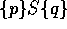

Given a Hoare triple  , what properties can we infer?
hoare_inversion is a collection of such lemmas depending on
p, S and q.
** Module lib_hoare_inversion Imports lib_hoare
hoare_Inversion = ... :
{sort|location->Type}[Env'=Env sort][prog'=prog|sort]
[Assertion=Env'->Prop]Assertion->Assertion->prog'->Prop
hoare_inversion_cons = ... :
{sort|location->Type}[Env'=Env sort][prog'=prog|sort]
[Assertion=Env'->Prop]{p,p',q,q':Assertion}(limplies p p')->
(limplies q' q)->{S:prog'}(HD p' S q')->(hoare_Inversion p' q' S)->
hoare_Inversion p q S
hoare_inversion = ... :
{sort|location->Type}[Env'=Env sort][prog'=prog|sort]
[Assertion=Env'->Prop]{p|Assertion}{S|prog'}{q|Assertion}
(HD p S q)->hoare_Inversion p q S